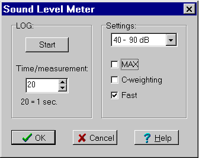

TES and Elma are two identical devices
Menu in Datalyse:
Graphical measurement
Control panel...
Read log
Delete log,
Sound Level Meter can measure sound from 30 dB to 130 dB. It has a serial interface and an analog output. If you use the analog output, you can use the device as a microphone. I.e. you can use it for Fourier analysis, e.g. with the PCskop-card. And as a microphone it is capable of registering frequencies and the hearing limit, which is an advantage when experimenting with the speed of sound in air using an oscilloscope.
The device has a log, capable of containing 4048 measurings.
The communication is specific: you send a space without CR, LF and the meter responds with 6 bytes.
Baud rate 9600, no parity, 1 stop, 8 data bits.
RTS is set low for the serial communication.
Elma Sound Level Meter:
Importer and distributor
Elma A/S, Geminivej 32, Postbox 180, DK-2670 Greve.
email: elma@elma.dk
Elpefa has many device of interest in physics.
Multimeters, energy meters, pressure measurers,...
TES Sound Level Meter:
Distributor Atimco, Egsagervej 8, 8230 Aabyhøj.
Sound Level Meter, control panel:

You can also set up the Sound Level Meter with the buttons on the device. It is only possible to set time per measuring in this menu, though.
The Area in the upper left does not matter. The meter measures correctly - even when the reading is outside the selected area.
Settings:
Max hold, means that the meter displays the maximum value
C-weighing: at C-weighing low-frequency noise is registered. This noise is filtered out at A-weighing.
Fast is recommended for ordinary sound measuring. If you do not check fast, the meter reads slow and the values fluctuate less (they are average values).
The log is started and stopped by pressing Start (stop).
Of course you can bring the sound meter with you in the field and record measurings in the log and transfer the data to the for analysis later.
Transferring a log to the pc takes about 2 minutes. It feels longer.
You can stop and restart the log and thus record several sound series, but they will all have the same time per measuring. Therefore it is recommended to erase the log before starting new measuring and before changing the time base.